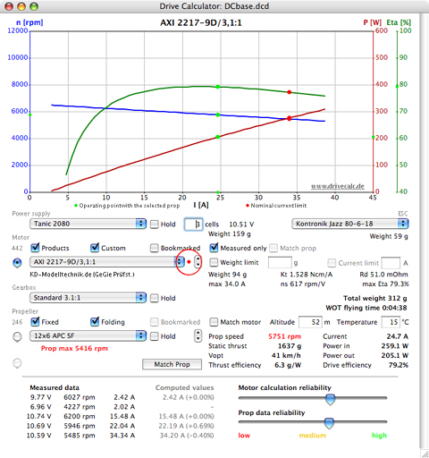
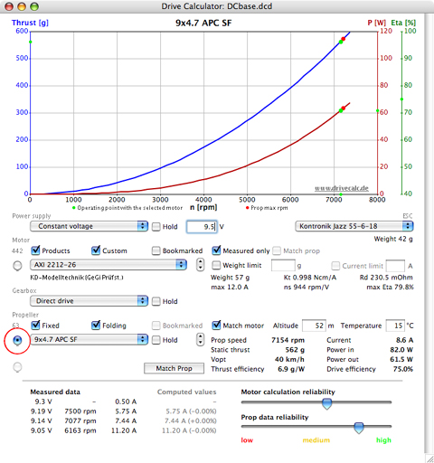
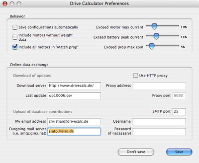

Index
Finding matching motors for the selected power supply and propeller
Comparing motors and propellers
Generating propeller constants - the virtual dyno
Data acquisition from EMeter or UniTest 2
Tools for motor builders:
Simple Prop Calculator
Rotor Calculator
Wire & Stator Calculator
Reconfigurator
Drive Calculator is a tool that can be used for DC motor analysis and as an aid in the selection of the complete power system for electrically powered model aircraft. Purchasers of commercially available products can use the program to help guide them to a suggested combination of power system components for a given model aircraft. The program can also help DIY (do-it-yourself) motor builders optimize the results of their work.
The application comes with a SQL database that contains separate tables for motors and drive configurations, batteries, ESCs, gearboxes, propellers and stators. You may add components' specifications and measurement data to the database, and you may share that new data with other users and receive database updates via the online data exchange.
Drive Calculator 3.4 will open the database file 'DCbase.dcd' by default. For archival or other purposes, you may create a copy of the database file, by means of the operating system, rename the copied file, and use it with the new name, if desired. Select 'Open database...', accessible in the 'File' menu, to open and edit the renamed copy.
Older database files carrying the name extension '.rbd' must be converted to the current data format before being accessed by Drive Calculator 3.4. Select 'Convert Old Database...' from the 'File' menu to have a .rbd file converted. The helper application 'DB2CSV' is required in the program folder.
To merge data from one database file into another, select 'Import data...' from the 'File' menu. The import function compares the components' names and offers the selection of all items that are not contained in the target database.
To create a new empty database file, select 'Create new database...' from the 'File' menu. You may then use the import function to transfer selected data from an existing database.
Drive Calculator uses metric units to display numerical data. Users, who are not familiar with the metric system, may prefer to have the values converted to Imperial/English units. A right mouse click on a unit such as grams, mm, cm, m, km, degrees C, etc. will open a popup window with the equivalent Imperial/ English units being displayed. In addition, a bi-directional converter is accessible in the 'Tools' menu.
Some control elements and symbols you may not be familiar with are explained in a help tag that opens on mouse rollover. The words "See Help..." in a help tag point to a more detailed explanation in this manual. If the words "See Help..." appear in the help tag, a right mouse click on the control element will open the context sensitive help.
Drive Calculator provides a second level of context sensitivity. Choosing 'Help' from the application's Help menu, or a right mouse click somewhere else in a window's area will open the help text concerning the window. Selecting 'Index' from the Help menu will open the complete manual at its beginning.
The main window
The main window displays the components that make up a complete drive, including the power supply, the ESC, the motor, possibly a gearbox, and the propeller. You may select any of the components from the respective popup menu list.
Generally, the ESC is considered to be a part of the motor unit and therefore should only be selected in the motor editing window, when entering the motor measurement data. While selecting a different ESC in the main window is allowed, I strongly advise against doing so, since Drive Calculator's prediction accuracy would be reduced. Other than the forward resistance no specific ESC properties can be regarded in the computation. For a number of devices even the forward resistance is estimated, because it is not available in the database.

Choosing a different component changes the drive configuration, which is stored in the database along with the motor. Once a component is changed, Drive Calculator computes the performance of the new configuration and displays the result in the diagram graph and in the results area to the right of the propeller popup menu.
Items like 'Vopt' and 'Thrust efficiency' in the results area are explained in a help tag that opens on mouse rollover. You may choose between having 'Vpitch' or 'Vopt' displayed by clicking on that label.
For special purposes you may choose a 'virtual load' instead of a real propeller from the propeller popup menu. To adjust the speed of the virtual prop click on the speed figure that is displayed in the results area. It will then become editable. You may as well alter the virtual prop speed by dragging the mouse cursor horizontally in the diagram area. Instead of 'Thrust efficiency' the theoretical 'n100W' value of the virtual load will be displayed in the results area.
To save a drive configuration, including its power supply, gearbox, ESC and propeller, press Ctrl-S (Command-S on the Mac). A red dot, to the right of the motor popup list menu, indicates that the current motor configuration has not yet been saved. Drive Calculator can also save the configuration automatically, if the user has activated that option in the Preferences dialog window.
The saved configuration will be restored any time you select the same motor again. To keep a battery, gearbox, or prop setting different from that in the saved configuration activate the respective 'Hold' check box before selecting the motor.
It is important to note the propeller rpm warning in the picture above. Drive Calculator may display similar warning messages, in red, if the current is too high for the battery or for the ESC.
The warning messages depend on the entries in the database. If there is no limit specified in the database, there will be no warning. Since many entries in the database are incomplete, you should never rely on Drive Calculator warnings; i.e. the calculated rpm may lead to the destruction of the prop and cause extreme danger, even if no warning message appears.
In all cases you should refer to the manufacturer's specifications.
You may select either a constant voltage or specific cells as the 'Power supply'. If 'Constant voltage' is selected, the voltage is entered into the volts 'V' input box by highlighting the default voltage number, typing the desired voltage and pressing the Enter/Return key or the Tab key. Holding the left mouse button and dragging the mouse cursor vertically anywhere in the graph area will also change the constant voltage.
The battery cell type is selected from the popup menu list. Once a specific cell type has been selected, the number input box changes to 'cells'. The desired number of cells is entered into the 'cells' input box. Holding the left mouse button and dragging the mouse cursor vertically anywhere in the graph area will also change the number of cells.
When specific cells are used, the voltage under load and combined weight of the cells appears to the right of the 'cells' input box. Once a battery type has been selected from the menu list and the number of cells entered into the input box, Drive Calculator displays the wide open throttle (WOT) flying time. The actual flying time will vary according to the type of plane and the pilot's flying style. With a light plane and an efficient drive you may easily achieve much longer flying times. At half throttle the power consumption is usually less than a quarter of that at full throttle.
The Total weight indication, shown above the 'WOT flying time', is computed using the cell weight multiplied by the number of cells, plus the ESC weight, the motor weight, and the gearbox weight (if used), if the information is available in the database. If no weight information is indicated in the respective component's area, it will also be missing in the total weight. Propeller, hub, connectors, cables, and mounting parts are not included.
Initially, the output data may be viewed in two different graphs displaying either the motor data or propeller data. When the radio button to the left of the motor popup list menu is selected, the graph displays motor data. When the radio button to the left of the propeller popup list menu is selected, the graph displays propeller data.

Additionally, a third graph view, also displaying propeller data, becomes available once the 'Match prop' button has been selected. It provides a second propeller graph with special functions that can be used to select and compare motors (see Finding matching motors for the selected power supply and propeller below).
The check boxes in the 'Motor' and the 'Propeller' areas provide access to the filters that can be applied to the database. The first two filters in each row are additive and, when activated, include the items. All of the other filters are subtractive. When activated, these filters exclude items from the selection and limit the choices. This makes selection easier. The grayed numbers, on the left of the filter rows, indicate how many entries have passed the respective filtering.
The propeller selection can always be limited to props matching the selected motor, 'Match motor', in its current configuration.
It is possible to have filter combinations that leave no entries; Drive Calculator then tries to disable the last filter setting.
Any motor or propeller may be bookmarked, while it is selected, by pressing Ctrl-D (Command-D on the Mac). You may want to use the 'Bookmarked' filter for the components that you own or are considering for purchase. To edit the bookmarks, select the 'Edit' item in the Drive Calculator menu and then 'Edit bookmarks...'.
Double-click in the 'Remarks' area below the motor menu to open the search window and enter a search term. Drive Calculator searches for identical character strings in the motors names and in the remarks. The search result is presented in the motor menu with the filters remaining effective at the same time.
Actually the search term functions as an additional filter as long as the search window is open.
In a similar way you may search for motors with a certain generator constant KV. Open the search window to enter the desired rmp/V value by double-clicking on the 'ns' value that is displayed in the motor properties area. (ns is the real-world equivalent of KV.) The search result, presented in the motor menu, comprises all motors with a KV that differs by less than 3% from the desired value.
In a similar way you may search for motors with a certain weight. Open the search window to enter the desired weight by double-clicking on the 'Weight' label that is displayed in the motor properties area. The search result, presented in the motor menu, comprises all motors with a weight that differs by less than 5% from the desired value.
The sliders at the bottom right of the application screen are not meant for controlling any options. The sliders attempt to display the computation quality of the motor and the reliability of the propeller data.
The reliability rank for motors depends upon several factors:
1. The difference between the computed current values and the measured values
2. The difference between the operating voltage and the measured voltage range
3. The number of measurement points
4. The spread of the measured data (ideally, the loaded operating point voltages should be the same while loads should differ strongly; for a second no load operating point the voltage should differ by 10 to 20 percent).
The reliability rank for propellers depends on how many independent sources have contributed plausible data for the computation of the propeller's power constants. For constants generated by Drive Calculator's virtual dyno the reliability rank depends on the quantity of measured data.
Finding matching motors for the selected power supply and propeller
Select a power supply and propeller. Start the database scan run by clicking on the 'Match prop' button below the 'Propeller' area. The result of a scan run is a list of motors that fit the selected power supply and propeller. Now, only these motors are available in the motor popup menu and are represented by gray dots in the second propeller graph view.
In the example below, the search has been limited to the results of the 'Measured only' filter, which excludes the motors without measured data. The limitation is indicated by the symbol '(f)' in the result display left to the 'Match prop' button. In the Preferences dialog window, accessible in the Drive Calculator menu, you may choose the option to always include all motors, regardless of the filter settings.
Each of the grey dots on the graph represents one of the matching motor's operating points with the chosen propeller. The green dots show the selected motor's operating point. To choose a motor and have its data displayed, either select it via the motor menu or click one of the grey dots on the graph.
The dots on the 'Eta' bar, on the right of the graph, show each motor's efficiency at the computed operating points. You may also click on these points and select a motor by its efficiency. You may set an efficiency threshold for the motor collection presented in the graph by dragging a vertical line in the white area right to the 'Eta' bar.
To perform a selection by thrust click in the area left to the 'thrust' bar next to the desired value. Doing so restricts the choice to a small number of motors. Clicking on the radio button to the left of the ‘Match prop’ button, even though it appears to currently selected, will clear the thrust filtering.
Once a scan has been run, the 'Current limit' filter can be accessed. This filter applies only to the scan result.
The scan result filter 'Match prop name' in the 'Motor' section is automatically activated after the scan run. It is disabled in the match prop graph view, but is enabled if you return to the standard motor graph view by selecting its radio button. Switch it off if you do not want the limited motor selection. In addition, 'Hold' is activated for the battery, the gearbox, and the propeller selections.
Sometimes you may want to exceed the limits specified in the database to investigate what might happen if you did. In the Preferences dialog window, accessible in the Drive Calculator menu, you may choose the option to exceed the maximum current specified for the motor, the peak current specified for the battery, or the maximum rpm specified for the propeller by an amount of up to 50%.
Choosing one of these options means that Drive Calculator will include the respective components in the computation and display the results. You may see warning messages, in red, if an over-stressed component is selected. Exceeding the specified limits with real world motors, batteries, ESCs, and propellers can destroy the components and may result in personal and property damage.
Comparing motors and propellers
Up to up three motors at a time can be compared by clicking the little selection arrows on the right side of the motor popup menu.
With the motor radio button selected, clicking the little down arrow once allows a second motor to appear in the graph. Use the popup menu list to select the desired motor. Each motor can have its own power supply, gearbox, and even prop settings.
By clicking on the down arrow once again, a third motor will appear and may be changed to the desired motor by using the motor popup menu list. Select any of the three by clicking on the little arrows. If the first motor is selected, clicking upward once again makes the third motor disappear. One more upward click and the standard motor graph reappears.
When comparing motors at different operating voltages, you may prefer to have the horizontal diagram axis refer to the electrical input power instead of the current. To change the horizontal graph axis from current 'I [A]' to power 'Pin [W]' left click on the graph axis title 'I [A]' above the cell/voltage input box. The horizontal axis will now display power instead of current.
If you wish to mask one of the curves, click on the respective axis title 'n [rpm]', 'Pout [W]', or 'Eta %'.
Following the same procedure you may compare up to three propellers in the diagram. The little arrows control in the Propeller area is used for this purpose.
The Drive Calculator database contains separate tables for batteries, ESCs, gearboxes, motors, propellers, and stators. To examine or modify the data and to add new components you may open a dialog window for each table of the database via the 'Edit' item in the main menu.
To add a new component, select 'New...', which is located at the bottom of the component's popup menu list, or click the 'New' button in the component's dialog window opened from the 'Edit' menu. Selecting 'New' clears all fields in the dialog window and starts a new database record.
If a similar component is already in the database, the component's record may be copied to save retyping a lot of the information. To copy a component, hold down the Shift key while clicking on the 'New' button. The contents are copied to a new record and the word "copy" is appended to the component's name.
When entering new data, use a unique name for each component, so that the component can be identified in the popup menu lists. Using a unique name will also make the merging of the data, via the online data exchange, safer and easier.
When adding a new battery you must specify the cell voltage. The nominal voltage of a NiCd/NiMH cell is usually 1.2 Volts, with the nominal voltage of a Li-Po cell being 3.7 volts and the nominal voltage of a Li-Io cell being 3.6 volts. The nominal voltage for the Milwaukee V28/Emoli cell is 3.75 volts and the nominal voltage for the Dewalt 36V/M1/A123 cell is 3.1 volts.
For parallel pack configurations, you may add a special cell type under a different name. Here is an example:
Open the original file (i.e. 'Thunderpower 2100 prolite'). Hold down the shift key and click the 'New' button. All entries are now duplicated and the name is modified to 'Thunderpower 2100 prolite copy'. Click on the up arrow next to the battery name field. The word 'copy' in the new name is replaced with '2P' (for 2 in parallel, but it can be three or more also, if you click on the arrow more than once). Imax [A], Imax short [A], capacity [mAh], and Weight [g] are multiplied by the number of cells in parallel. Ri [mOhm] is divided by the number of cells in parallel. Finally, click on the 'Save' button to add the new record to the database and close the battery dialog window.
When adding new ESC data, although not required for this version of the program, you should fill in all available data. Based on the 'Imax' and 'Imax short' entries a warning message will be displayed in case the limit is exceeded for a drive configuration. The weight entry is included in the 'Total weight' information. If R is specified correctly, Drive Calculator may achieve better accuracy in the motor analysis.
If the ESC timing differs from the standard/default timing, please add the timing information to the name.
When adding a new gearbox you must at least specify the ratio and the efficiency. For a 1-stage gearbox, the efficiency will usually range between 90 and 98 percent, depending on the quality and the materials used.
Enter the weight data, if available, since Drive Calculator is including it in the 'Total weight' information. Even if the gearbox is a part of a motor unit, the gearbox's weight should be entered separately from the motor's weight.
When the propeller dialog window is opened to edit or examine the propeller entries, the propeller popup menu holds a list of all available dimensions, types, and hub sizes.
When you select 'New' to add a new propeller, the propeller popup menu holds only the type names. You should select the type from the list, if it is available. This avoids typing errors and achieves a uniform notation.
When adding folding props, you need to add each folding prop with a different hub diameter separately, even if the blades are the same.
Click on the 'Cancel' button to return to the editing mode without storing a new propeller.
Click on the 'Type' label to select the propeller you are editing in the main window.
To add a new propeller you must at least provide the power constants. You should also enter the static thrust constants, if available.
The speed dependant propeller load may be expressed either by the n100W value, which defines the speed of the propeller when it is drawing 100 Watts of mechanical power, or by the factor and the exponent of the function power = factor * (rpm/1000)^exponent. The n100W is a standardized measure. It can be used to compute the propeller load at any speed, but the results are less accurate than those derived from the second method. If you enter the factor and the exponent in the power area of the dialog window, Drive Calculator will compute the n100W value, and vice versa.
The static thrust is specified in a similar manner. It can either be expressed by the n10N value, which defines the speed of the propeller at which it generates a static thrust of 10 Newtons, or by the factor and the exponent of the function thrust = factor * (rpm/1000)^exponent. If you enter the factor and the exponent in the thrust area, Drive Calculator will compute the n10N value, and vice versa.
Generating propeller constants - the virtual dyno
Drive Calculator provides a tool for generating the propeller constants for an unregistered prop from measured data.
With the assistance of Drive Calculator's virtual dyno a single measurement of a registered motor's voltage, current and rpm, when used with the new propeller, is sufficient to provide the required power constants.
You may use the following procedure even if the motor is not yet in the database. In that case, you must first enter all of the measured motor data (see Entering measured data) and click on the 'Save' button to have the motor characteristics computed and add the new motor to the database.
When entering a new, unregistered propeller, proceed as follows:
1) From the programs ‘Edit’ menu, select ‘Motor…’
2) In the motor dialog window, select the motor used for the propeller test. It is a good idea to make a copy of the motor so as not to lose or change the data registered with the original motor. To make a copy of the original motor, hold down the ‘Shift’ key and click on the ‘New’ button in the motor dialog window.
3) Using the copy, add the motor’s measured data (voltage, rpm, current) for the new prop as the last line of inputs in the U[V], n[rpm] and I[A] input fields. If data already exists in the very last line of the data input fields, change the data to the data for this prop. Remember, a copy of the original motor data is being used.
4) Select 'New propeller', located at the bottom of the propeller popup menu to the right of the data just input. A new propeller dialog with the power constants already entered window will open.
5) Enter the propeller data (type, dimensions, ...) as well as the altitude and environment temperature at which the measurement was made.
6) Click on the 'Save' button to add the new propeller to the database. Close the Propeller dialog window.
7) Click on the 'Save' button in the motor window to store the motor data if desired or close the copy of the motor data without saving if that is desired.
Deriving the constants from only one measurement is better than nothing, but not very accurate. In the absence of more data, Drive Calculator has to assume the ideal behavior of the propeller, that is a cubic relation from rpm to power drain (likewise does the n100W method, while n10N assumes an ideal quadratic relation from rpm to static thrust). In reality, no propeller behaves ideally. There are deviations from the basic propeller theory, which are mainly caused by the bending of the blades and partial stall of the airflow.
That is why the factor and exponent method is much better in defining a propeller's characteristic data. A more detailed description of the method can be found at the Aircraft-world PropTalk website.
In order to compute more accurate power constants, Drive calculator can use any number of rpm and power data pairs, covering a broad rpm range. If you are able to supply data from actual dynamometer tests, you may enter the data pairs, along with the altitude and air temperature of the test environment, into the listbox in the 'Generate power constants' window. To open the 'Generate power constants' window and have the power constants computed, click on the 'Generate' button in the power constants area of the propeller window. The graphical view should be used to examine the data and remove runaways. Finally, 'Set' the constants.
Measuring a propeller's loading of the motor is difficult, and most people do not have a dynamometer available for their use. That is where Drive Calculator's virtual dyno comes in: It offers an alternative by utilizing the propeller references in the motor measurement data. If you click on the 'Generate' button for a propeller that has been used in motor measurements, you will find the references collected from the database in the listbox. The respective power values will be computed based on the motor characteristics that Drive Calculator has determined.
The quality of the virtual dyno results depends on the accuracy of the registered data. The accuracy may be quite high, if the number of measurements and the rpm range covered is large. If the range is too small to compute a viable result, the virtual dyno will average out the data and switch back to the regular exponent value of 3.
There is no virtual test stand for thrust constants. Fortunately, a real thrust stand is easier to obtain or make than a dynamometer. To open the 'Generate thrust constants' window and have the thrust constants computed, click on the 'Generate' button in the Static thrust constants area of the propeller window. Enter the rpm and thrust data pairs, along with the altitude and air temperature, into the list box. Finally click on the 'Set' button to store the constants in the database.
Keep in mind that setting the constants from the 'Generate' window replaces the existing values. Before doing so, you should be convinced that the new constants are more accurate than the already recorded data. Alternately, you should make a backup copy of the database for this purpose. The only way of getting the replaced data back is putting the backup copy in the place of the current database.
Generating power constants for a new propeller can be done by using a single motor as the virtual dyno. You should preferably choose a motor with high 'Motor calculation realiabilty' indicated in the main window. Mount the new propeller and connect the drive set to an adjustable power source, if available. Open the 'Generate power constants' window and click on the 'Use current motor' button. A window will open that allows to put in a series of measured data at different supply voltages. All measurements must be made at full throttle. As an option you may add the static thrust measured at each operating point at the same time.
The motor window
To add a new motor you may either provide the minimum information that can be found in the manufacturer's specification or enter the measured data for a motor analysis. The latter method allows Drive Calculator to derive more accurate results. Entering measured data is discussed below.
A motor record with very few entries is displayed above. The minimum information to be entered is Kv, Rm, no load voltage, and no load current. Usually these data points are only sufficient for a very rough estimation of the motor characteristics.
If the no load speed is available along with voltage and current, Drive Calculator will compute the Kv based on that data, when you click the 'Save' button.
If the wire diameter is available, you can have the maximum current computed by clicking in the 'Imax' editing field, while holding the shift key down.
To select the motor you are editing in the main window click on the label 'Name'.
The motor analyzer part of Drive Calculator is designed to approximate the motor's characteristic data based on real world measurements. If you have measured data, there is no need to fill in the Kv and Rm fields, since Drive Calculator will do its own computation and overwrite these entries anyway.
Up to six sets of measured data may be entered in the motor dialog window. The minimum amount of data to be entered is two sets. The first set should contain the no load data including rpm. If you do not have the no load rpm, you may just enter the no load voltage and the no load current in the first row. (You must always enter no load data in the first row.) If the no load data does not include the rpm, then you will need to enter at least one more data set that includes the rpm value.
The more measured data that is entered, the better is the computation accuracy. Ideally, you should provide two no load data sets at voltages differing by 15%, along with four data sets measured at a voltage in between, with strongly differing loads that cover the full power range you desire to use.
All measurements must be made at full throttle. Perform the no load measurements at operating temperature. The idle current of the ESC should be subtracted from all current data.
In this program version, the ESC is considered to be a part of the motor unit. The ESC, which has been used during the measurement, is specified in the motor dialog window. The gearbox must also be specified with the motor, if the data provided refers to a motor/gearbox combination. Input the motor's weight and the gearbox's weight separately. The gearbox weight is entered in the gearbox dialog window. In the main application window, you may still choose a different gearbox for computation.
The computation in this program is based on a simplified model of the DC motor and is applicable to brushed motors and brushless motors, but expect no miracles. The model does not consider all factors, i.e. the interaction of the ESC with the BL motor. Even if careful measurements, with good equipment, are provided, the calculator results may sometimes deviate substantially from reality. It is imperative to have the equipment to test the actual amp draw and voltage for any real motor, battery and ESC tests so as not to damage any of the power system components. Drive Calculator is a guide, not a real world measuring device.
As an accuracy check, the difference between the measured and computed current values is shown at the bottom of the main window. However, if only two rpm values are provided, the calculator cannot compute a meaningful indication, and it will not be displayed.
If differences of more than 3% arise, examine the measured data and repeat the measurements, if possible, or select alternative data (with different voltages or loads). It is advisable to record additional measurements during the motor testing so that alternative data is available if needed. The calculator is particularly sensitive to discrepancies in the no load data.
I am asking that DIY motor builders adopt the following naming convention for custom made motors that is to be used in the database. Each motor name starts with a set of numbers that indicate the most important parameters, followed by a unique name string, i.e.
242x144 13D630 Quadro
in which
242 is the stator diameter in millimeters x 10
144 is the stator height in millimeters x 10
13 is the number of turns of the winding
D stands for delta termination (Y indicates WYE termination)
630 is the wire diameter in millimeters x 1000 (respective diameter in case of
multiwire windings).
Remember, there is still a Remarks field for individual notes and comments.
Data acquisition from EMeter or UniTest 2
Drive Calculator supports data acquisition by means of the Hyperion EMeter or the SM-Modellbau UniTest 2.
Real-time data acquisition: Connect the device to the serial port of the computer. Switch it on. If using the UniTest 2, also activate data recording. Select the device name from the 'Data acquisition' popup list menu. Select the serial port in use from the menu that appears on the right. Radio buttons appear next to the edit fields. Click on one of them to select the row into which the measured data is to be written.
If you choose to have a log file written by checking the box at the bottom, you will be prompted to enter the file name and destination.
Drive Calculator will guide you through the measuring procedure. It is advisable to fill in all fields and select the propellers before starting the measurement, since some information goes into the log file.
The procedure starts by recording the idle current of the ESC. Then you run the motor and start the recording as soon as the readings have stabilized. After a few seconds of recording you may stop the measurement. Drive Calculator will then compute the mean values and subtract the ESC's idle current. The results show up in the input fields. If you wish to repeat a measurement in the same row, click on the radio button once again to enable the edit fields.
Logged data acquisition: Drive Calculator is able to read the logged data from the Unitest 2. To do so, you should log the ESC idle current, one or two no-load operating points at different voltages, and up to four loaded operating points at different loads, according to the recommendations in the paragraph Entering measured data.
Connect the device, select 'Unitest Data Logger' from the 'Data acquisition' popup list menu, and select the serial port from the menu that appears on the right. Click on the 'Read logged data' button in the 'Unitest Data Logger' window.
Once the logged data are displayed in the window's list box, identify a data set that carries the ESC idle current and highlight that entry by a mouse click. Click on the 'ESC idle current:' button to have the current value transferred to the respective edit field.
Identify a coherent section of the displayed data carrying no-load data (referring to the same voltage). Highlight that section by clicking on its first entry and on its last entry while holding the shift key down. Drive Calculator will then compute the mean value of the recorded data in that section, subtract the ESC qiescent current, and display the results in the appropriate edit fields. Click on the 'Apply' button to have the data transferred to the selected input row in the motor dialog window.
After that, Drive Calculator will automatically select the next row in the motor dialog window. Continue by highlighting the second no-load data section, if available, or a loaded data section (referring to the same voltage and load). When you are done, close the 'Unitest Data Logger' window and click on 'Save' in the motor dialog window to store the motor data in the database.
The Tools menu of the application contains some useful tools for motor builders.
The Simple Prop Calculator computes the static thrust and the propeller load based on the constants in the propeller database and on the altitude and temperature specified in the main window. The tool can also give a rough estimation of the motor efficiency, if you enter the motor voltage and current measured at the operating point. This is useful if you have measured data at only one operating point.
The Rotor Calculator computes rotor dimensions and magnet distance, based on the magnet and the stator dimensions and the desired air gap. If you are lucky enough to have a lathe for making motor parts, you may like this tool. The result applies to flat magnets only, for curved magnets you simply add the air gap and the magnet thickness to the stator radius and double the result to compute the inner diameter of the flux ring.
The Wire & Stator Calculator deals with the mechanical and electrical properties of the winding. It computes the wire section and respective diameter for multi-wire winds. It also gives a recommendation for the maximum burst current, which may be applied for a few seconds, if sufficient cooling of the motor is provided.
Based on the stator dimensions, the Stator Calculator approximates how many turns can be accommodated in how many layers. A very skilled person may be able to wind even more turns, so you may enter a 'Number of turns chosen' that exceeds the computed number of 'Maximum turns' slightly.
The computed 'Length per phase', as well as the computed resistance and weight, refers to the winding only; it does not include the connection wire.
The Reconfigurator very roughly estimates the effect of modifications on the winding and the stator height of the selected motor. If you select it from the 'Tools' menu, additional text edit fields will appear at the bottom of the main application window. The modified parameters are entered into the appropriate edit fields and then a third pair of little arrows is used to change between the original and the modified motor.
Drive Calculator 3.4 offers basic printing functionality for the contents of the application window. Open the 'Print Selection' dialog, which is available in the 'File' menu, to select the elements you want to have printed and add your own headline, if you like.
In the Preferences dialog window you enter general program settings and your connection profile for the online data exchange.

Save configurations automatically: Any changes of the drive configuration, including the power supply, the ESC, the gearbox, and the selected propeller, will immediately be stored in the database. When that motor is selected again, the changed configuration will be restored. If you deactivate this option, you may still save any configuration by pressing Ctrl-S (Command-S on the Mac). To keep a battery, gearbox, or prop setting different from that in the saved configuration activate the respective 'Hold' check box in the main window.
Include motors without weight data: This option controls the function of the 'Weight limit' filter in the main window. Some motor records in the database do not provide the weight information. If the option is deactivated, motors with no weight listed in the database will be excluded from the filter result.
Include all motors in 'Match prop': On a fast computer this option should be activated, so that the database scan run includes all motors. You may still apply any motor filter to the resulting motor list. On a slower computer you may prefer to deactivate this option, so that only the filtered motor list is scanned.
'Exceed...' settings: See section Stretching the limits
Download of updates: Drive Calculator may periodically check its home server for new items when the computer is online. You may also send a server request with a mouse click in the Database Update window.
Users who have Internet access via a company network may need to activate 'Use HTTP proxy' and fill in the proxy information on the right side of the window. The data to be entered in the edit fields are the same as in your web browser. Deactivate 'Use HTTP proxy', if you are using a direct Internet connection.
The 'Last update' entry informs you of the current update status of your database.
Upload of database contributions: Drive Calculator uses your email connection to transmit database contributions. The data to be entered in the edit fields are the same as in your email client software. The upload is started with a mouse click in the Data Submission window.
In the 'Database update' window, available in the 'File' menu, you are informed of the current update status of your database. The protocol field shows a list of the items that have been added or changed during the last update.
Click on the 'Online update' button to check for new updates on www.drivecalc.de. Drive Calculator may also check periodically for new items when the computer is online and display a message if there are updates.
Click on the 'Offline update' button to perform an update from a local file that has already been downloaded from www.drivecalc.de. The update file must be located in the sub-directory 'DCDownload'. If the folder 'DCDownload' does not yet exist, you will need to create it in the Drive Calculator folder.
Upon confirmation, the database update will be loaded and merged into your database. You will see a detailed report of what is added to your database in the protocol field.
A database update may contain new records, which are added to your database, or it may contain modifications of existing records. Database records received from the central server may be replaced if more accurate data becomes available.
Database records that you have entered and not submitted to the common database will not be replaced or modified. If an update file contains an item with an identical name, a dialog window will open showing the contents of the existing record and the new record. You may decide to reject the change, replace the existing record, or add the new record under a different name.
The 'Data Submission' window, available in the 'File' menu, displays a list of all database records that you have added or modified. You may mark records to be submitted to the common database by checking the respective box on the left side. Before submitting records, make sure the computer is connected to the Internet. Click on the 'Submit now' button to start the transmission. Once transmitted the records will disappear from the list. They will, of course, still be available in your database.
While the Drive Calculator application is the foundation for motor modeling and data storage, it is the user-supported database that makes it a valuable and useful tool. I ask everyone with the knowledge and appropriate measuring equipment to contribute to the common database. I promise to keep up the infrastructure for the online data exchange, look through the incoming data, and take care of the update files.
The new motor that I have added does not show up in the motor popup menu list. Where has it gone?
Check the motor filter settings. The new motor can appear in the list only if it passes the filtering. For example: If you have added a motor without measured data, it will not be listed unless the 'Measured only' filter is deactivated.
Drive Calculator keeps indicating "Select larger prop", but there is no larger prop in the propeller popup menu list.
Check the Power supply and gearbox settings. A low KV motor is typically used without a gearbox. You may also need to choose a higher operating voltage.
During a scan run, Drive Calculator reports a 'Computation error' and stops scanning. What can I do to get a complete scan done?
A computation error is caused by motor data that Drive Calculator cannot handle. That motor's name is indicated in the error message. Examine the motor data in the motor dialog window. Check, if the data are plausible and comply with the rules. A frequent error that causes a computation error, is a Rm value of 0 for a motor without measured data. If you cannot correct the motor data, you must delete the motor from the database.
My motor is not in the database. Can I use Drive Calculator anyhow to find a matching propeller?
You may try out a similar motor if you are aware of your motor's basic specs. Select 'Find KV...' from the 'Edit' menu and enter your motor's KV. If the search is successful, select 'Find weight ...' from the 'Edit' menu and enter your motor's weight. Select a motor from the motor menu that has approximately the same weight. Check the 'Match motor' filter box in the propeller area. The propellers displayed in the propeller menu should approximately match your motor. The performance data as well should be approximately the same. This method, of course, assumes equal quality of the two motors.
...
Please send any questions that this manual may have failed to answer to christian@drivecalc.de